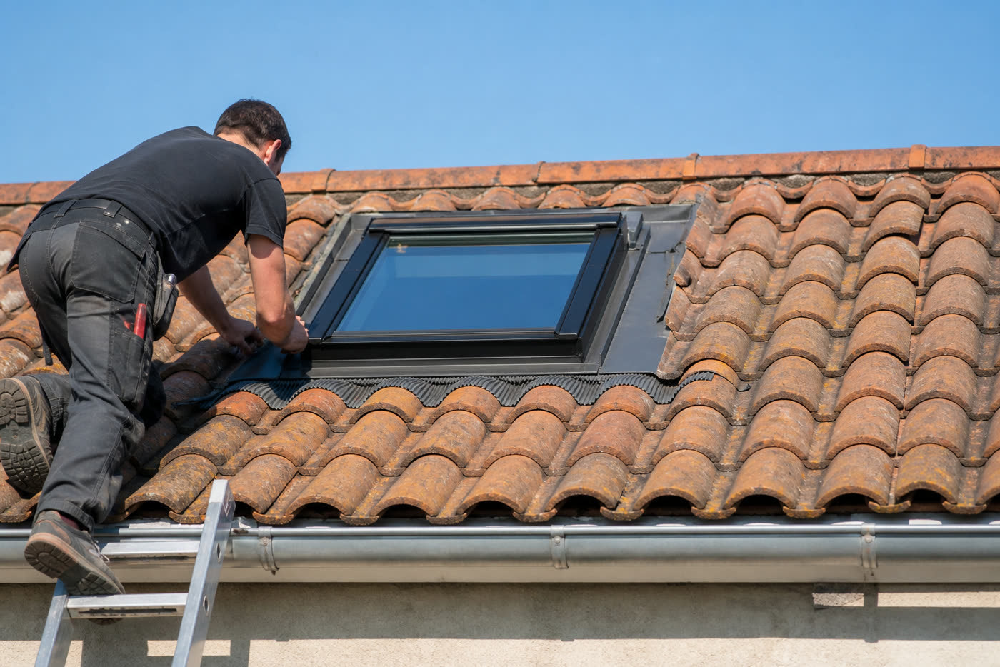

Pose de fenêtre de toit
Installation d'une fenêtre de toit ou remplacement d'un modèle vieillissant : l'étanchéité autour du châssis est l'étape qui compte le plus, et c'est là que nous mettons le plus de soin.

Ce qui est compris
- Création d'ouverture dans la couverture existante, charpente adaptée si nécessaire.
- Pose du châssis et raccords d'étanchéité (kit de raccordement adapté à la couverture).
- Remplacement d'un modèle existant lorsque l'étanchéité ou le vitrage est à revoir.
- Finitions intérieures autour de l'ébrasement : rebouchage et reprise des jointures.
La pose fait la différence
La plupart des infiltrations autour d'une fenêtre de toit viennent d'un raccord d'étanchéité mal posé, pas du produit lui-même. Nous portons une attention particulière aux solins et bandes de raccordement, en cohérence avec le type de couverture (tuiles ou ardoises).
Nous travaillons avec les gammes de notre partenaire Velux et adaptons la pose selon que le projet concerne des combles perdus ou des combles déjà aménagés.
Pose de fenêtre de toit près de chez vous
Cette prestation, intégrée à nos chantiers de couverture, est disponible dans tout le secteur de Brive-la-Gaillarde et au-delà, en Dordogne comme en Corrèze.